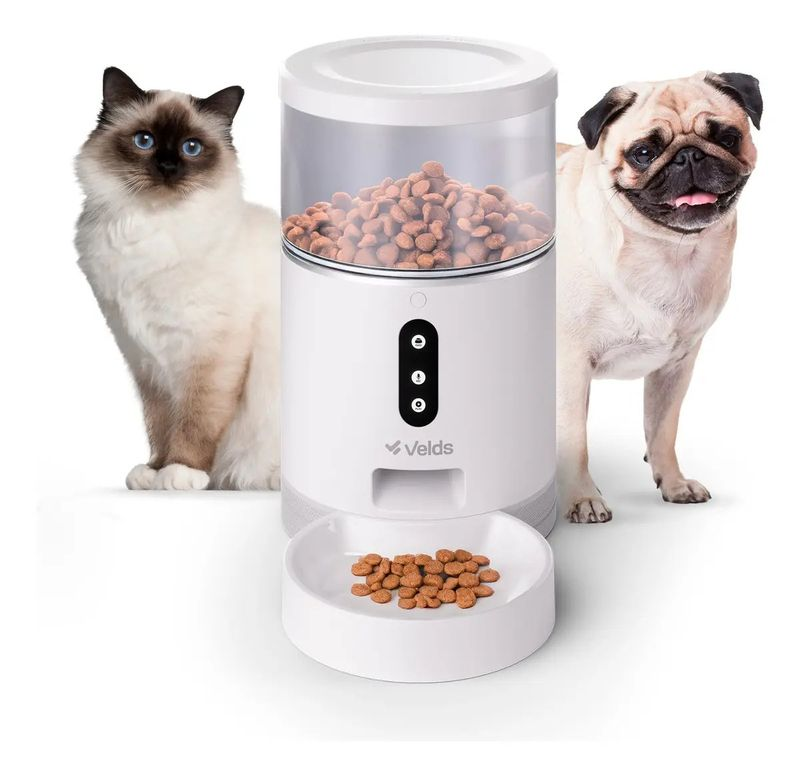
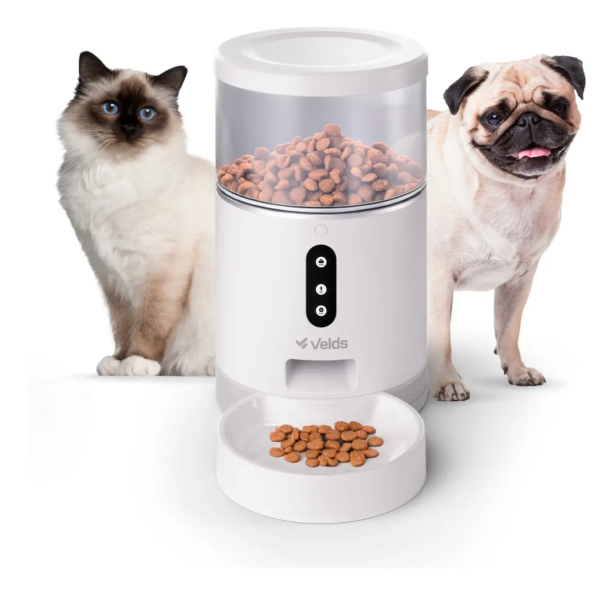
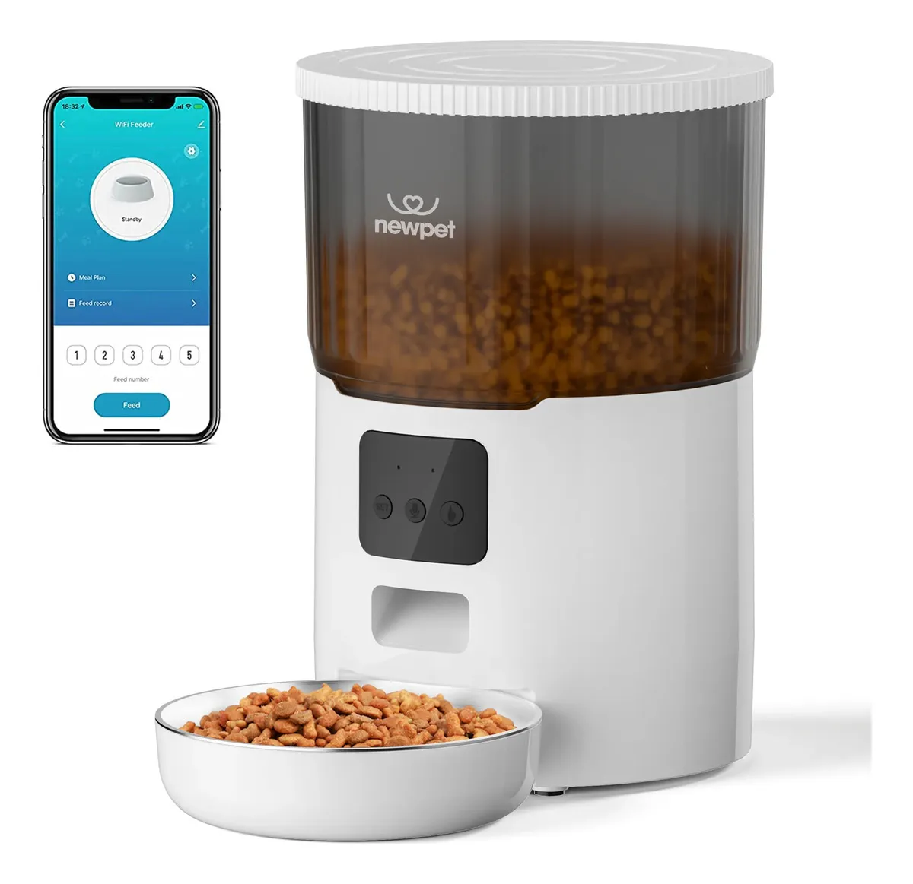
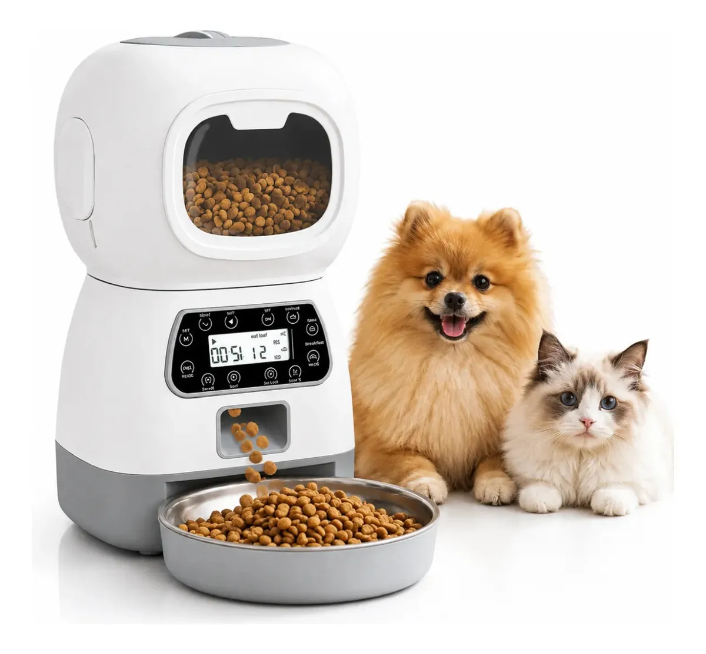
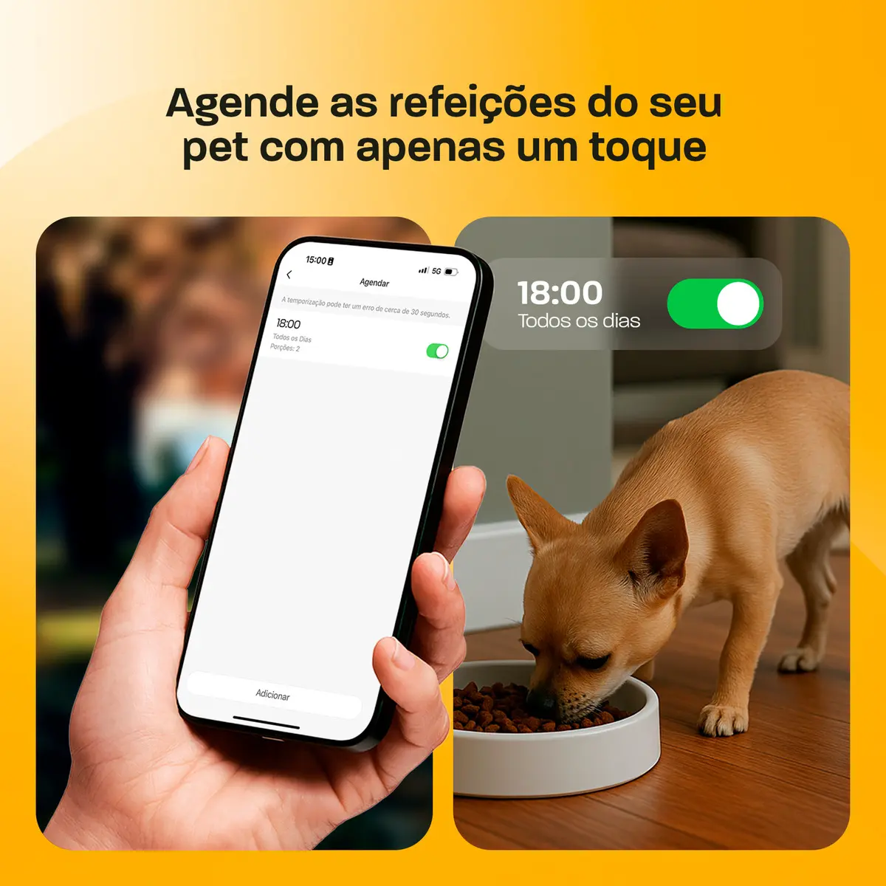
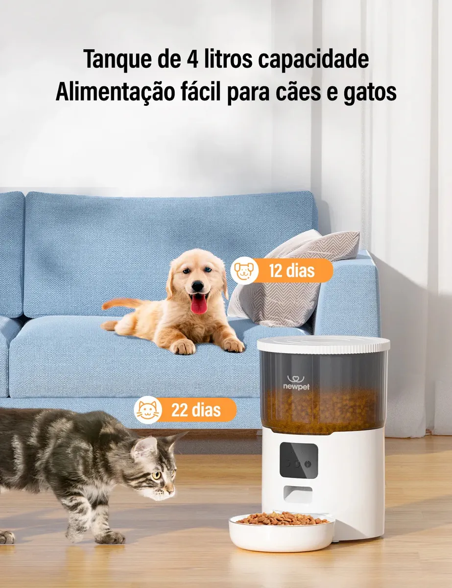
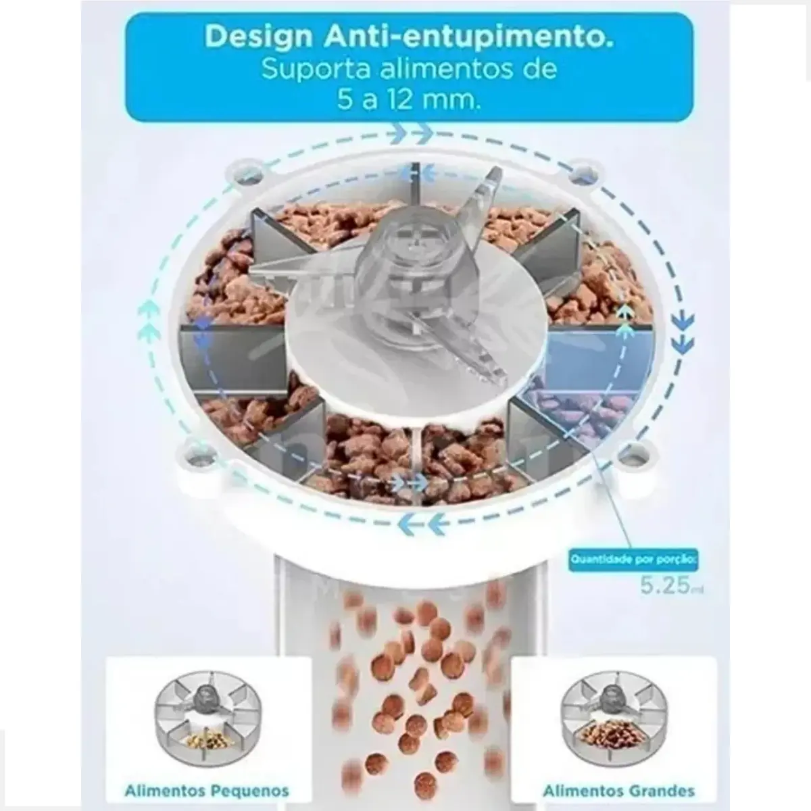

Se você procura um comedouro automático ou alimentador automático para gatos e cães, comparamos 3 modelos com reservatório de 4 litros vendidos no Mercado Livre: o Velds 4L Wi-Fi (app completo), o Newpet 4L (app + gravação de voz) e um alimentador programável com painel LCD, sem app e sem depender de Wi-Fi. Cada um resolve uma prioridade diferente — veja qual combina com sua rotina.
8,7/10 — Escolha do editor: Velds 4L Wi-Fi
Resumo em uma linha: Entre os três, o Velds entrega o app mais completo e o ajuste de porção mais fino, desde que a rede Wi-Fi do local seja estável.
Ideal para: Tutores com Wi-Fi estável em casa que querem controlar a alimentação do pet remotamente.
Se preferir simplicidade: O alimentador programável com LCD (sem app) é a opção mais previsível e não depende de internet.
Onde comprar: Mercado Livre, com preço e frete variáveis por vendedor.
Key Takeaways
- Testamos 3 comedouros automáticos de 4L: Velds (app Wi-Fi), Newpet (app + voz) e um modelo programável com LCD sem app.
- Uma pesquisa com mais de 750 avaliações verificadas de marketplace apontou modelos com app entre os líderes em satisfação, com mais de 94% de avaliações 5 estrelas (Farmapets, retrieved 2026-08-20).
- O Velds 4L Wi-Fi tem o ajuste de porção mais fino (1 a 40 por refeição), ideal para casas com cão e gato dividindo o mesmo comedouro.
- O Newpet 4L App é o único dos três com câmera integrada (2MP); o Velds e o alimentador LCD não têm câmera.
- Para quem não confia na rede Wi-Fi de casa, o alimentador com LCD funciona de forma 100% local.
comparativo de comedouros automáticos mais vendidos para cachorro

8,7/10
App completo, porções ajustáveis de 1 a 40, gravação de voz.

8,3/10
App + voz, bom custo-benefício, configuração simples.

7,9/10
Programação direto no painel, sem depender de internet.

A configuração do Velds é feita por app, conectando o comedouro à rede Wi-Fi de casa. Depois de parear, o tutor programa horários e quantidades de porção diretamente pelo celular, podendo ajustar remotamente mesmo fora de casa. O aparelho também permite gravar uma mensagem de voz reproduzida no momento da refeição, e conta com garantia padrão de 12 meses no Brasil (Rei das Promoções, retrieved 2026-08-20).
Na prática, o pareamento inicial costuma ser a etapa mais sensível: o app exige rede de 2,4 GHz (não funciona em redes exclusivamente 5 GHz), e o comedouro precisa estar próximo do roteador durante a configuração, mesmo que depois seja reposicionado. Uma vez pareado, o histórico de refeições fica salvo no app, permitindo checar se o pet realmente recebeu a porção programada.
como configurar o app do comedouro automático Wi-Fi

O Newpet 4L App compartilha a mesma capacidade de reservatório do Velds (4 litros) e também usa app (Tuya) com gravação de voz, mas com uma interface mais simples e menos opções de ajuste fino de porção. Em compensação, é o único dos três com câmera integrada (2MP), o que permite ver o pet no momento da refeição direto pelo app — um diferencial que nem o Velds nem o modelo LCD oferecem.
Importante: a marca Newpet também vende um modelo de 4L sem Wi-Fi/app, com programação só pelo painel físico — veja o review completo do Newpet 4L Programável (sem Wi-Fi) se for esse o modelo que você encontrou no anúncio.

Diferente dos outros dois, este modelo não depende de app nem de conexão Wi-Fi. Toda a programação — horários e quantidade de porções — é feita direto no painel LCD do próprio aparelho, com botões físicos. É a opção mais indicada para quem não tem rede Wi-Fi estável no local de instalação ou simplesmente prefere um comedouro automático mais simples, sem depender de smartphone.
Se ainda não decidiu entre um modelo com ou sem conectividade, veja o comparativo de comedouro automático com ou sem Wi-Fi: qual escolher.
Para quem trabalha fora e tem horário irregular, o principal ganho de um comedouro automático com app (Velds ou Newpet) é poder adiar ou antecipar uma refeição programada direto pelo celular, sem precisar voltar em casa. Se uma reunião estender o horário de almoço, por exemplo, dá para liberar uma porção extra remotamente até chegar em casa.
Em casas com mais de um pet disputando o mesmo comedouro automático, o ajuste fino de porções do Velds (de 1 a 40 por refeição) ajuda a calibrar quantidades pequenas para gatos ou cães em dieta, algo que o Newpet e o modelo LCD não permitem com a mesma precisão. Já em viagens curtas de fim de semana, qualquer um dos três, combinado com o reservatório de 4 litros, costuma ser suficiente para dispensar alguém passando em casa para alimentar o pet — desde que, no caso dos modelos com Wi-Fi, a rede permaneça estável durante o período.
Quando um comedouro automático com app perde conexão com frequência, os passos mais eficazes costumam ser, nesta ordem: reposicionar o roteador ou usar um repetidor de sinal próximo ao local de instalação, confirmar que a rede usada no pareamento é de 2,4 GHz, e reiniciar tanto o roteador quanto o comedouro após qualquer mudança de senha ou configuração de rede. Para o passo a passo completo, veja o guia como configurar o app de um comedouro Wi-Fi.
| Especificação | Velds 4L Wi-Fi | Newpet 4L App | Alimentador LCD |
|---|---|---|---|
| Capacidade | 4 litros | 4 litros | ~4 litros |
| Conectividade | Wi-Fi via app | Wi-Fi via app | Nenhuma (painel local) |
| Porções ajustáveis | 1 a 40 por refeição | Ajuste padrão do app | Ajuste direto no painel |
| Gravação de voz | Sim | Sim | Não |
| Câmera integrada | Não | Sim (2MP) | Não |
| Onde encontrar | Mercado Livre | Mercado Livre | Mercado Livre |
Se você já tem outros dispositivos smart home e uma rede Wi-Fi confiável, o Velds 4L Wi-Fi é a escolha certa para quem valoriza ajustar a alimentação do pet remotamente com precisão. O Newpet 4L App é uma boa alternativa para quem quer app e gravação de voz com um pouco menos de sofisticação no ajuste de porções. Já o alimentador com LCD é indicado para quem prioriza simplicidade e não quer depender de internet no dia a dia — ideal também como comedouro para gatos automático em ambientes onde o sinal Wi-Fi é fraco, como áreas externas. Para quem busca especificamente um comedouro automático cachorro de porte maior, o Velds e o Newpet aguentam bem porções generosas; como alimentador automático gatos, qualquer um dos três funciona, mas o ajuste fino de porção do Velds é o mais indicado para felinos em dieta.
Comedouros automáticos com app só entregam o benefício prometido (ajuste remoto, histórico de refeições) se a rede Wi-Fi do local de instalação for realmente estável. Cruzando os relatos disponíveis publicamente sobre esse tipo de produto, a reclamação de "perda de conexão" é sistematicamente mais comum em instalações longe do roteador (cozinhas nos fundos da casa, áreas externas) do que em ambientes internos próximos ao Wi-Fi principal. Antes de comprar um modelo com app, vale testar a força do sinal Wi-Fi exatamente no local onde o comedouro vai ficar — ou optar direto pelo modelo com LCD.
Esta análise foi construída a partir da ficha técnica divulgada pelos fabricantes e vendedores no Mercado Livre, do comportamento documentado dos respectivos apps, e de uma pesquisa de mais de 750 avaliações verificadas de marketplace citada pela Farmapets, cruzando esses dados com relatos recorrentes de usuários sobre conectividade Wi-Fi. Não realizamos teste laboratorial de precisão de porção ou vida útil do motor — a nota atribuída a cada modelo reflete uma avaliação editorial de custo-benefício frente aos concorrentes diretos da faixa de 4 litros. Recomendamos conferir as avaliações mais recentes de cada anúncio antes de comprar. Veja nossa política editorial e de afiliados.
Entre os três comedouros automáticos comparados, o Velds 4L Wi-Fi é o mais completo para quem quer controle remoto com ajuste fino de porções, o Newpet 4L App equilibra app e voz com um pouco menos de sofisticação, e o alimentador com LCD é a opção mais previsível para quem não quer depender de Wi-Fi. A escolha certa depende menos do preço e mais da sua rede em casa e da rotina do seu pet.
guia completo de comedouro automático para pet
Ainda em dúvida se compensa o investimento? Veja quando vale a pena um comedouro automático.
Escrito pela Equipe Smart Pet Gadgets. Dado de satisfação verificado junto à fonte original; veja nossa política editorial.
🐾 Confira o preço e a disponibilidade atual de cada modelo no Mercado Livre.
Link de afiliado: podemos receber uma comissão por compras feitas através deste link, sem custo adicional para você.
Nenhuma na prática: os dois termos são usados como sinônimos no mercado brasileiro para o mesmo tipo de produto — um dispositivo que libera porções de ração em horários programados, com ou sem controle por app.
Funciona parcialmente. Sem Wi-Fi, modelos como Velds e Newpet perdem o controle remoto e as notificações do app, mas a última programação configurada continua sendo executada localmente até a próxima queda de energia ou reinicialização, dependendo do firmware. Já os modelos com painel LCD, como o alimentador programável sem app, não dependem de internet em nenhum momento.
Os três modelos testados atendem cães e gatos, mas o Velds 4L se destaca pelo ajuste fino de porções (1 a 40 por refeição), útil para calibrar quantidades diferentes entre um cão maior e um gato em dieta.
Vale, principalmente para quem não quer depender de rede Wi-Fi estável. O alimentador programável com LCD cobre o essencial — porções e horários programados diretamente no painel — por um preço geralmente mais baixo que os modelos com app.
Nildo Alves — curadoria de produtos pet no Smart Pet Gadgets. Testa e pesquisa produtos para cães e gatos, cruzando especificações de fabricante com boas práticas veterinárias e dados de mercado.
Sobre o Smart Pet Gadgets · Contato · Política editorial e de afiliados